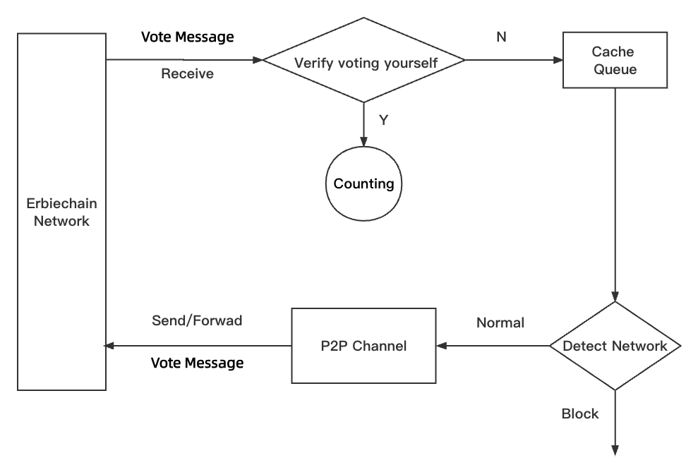
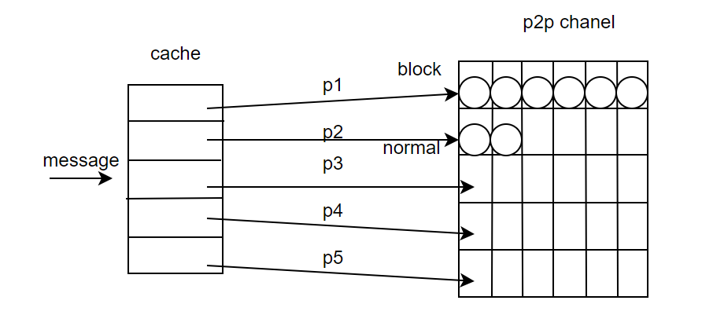

Blackhole Block Message Protocol#
This chapter introduces the blackhole block message protocol of the ErbieChain network layer.
Blackhole Block Message#
When the ErbieChain enters the blackhole block consensus process, it obtains the staking list and takes out a miner every 5 seconds in order. The selected miner then forms a blackhole block voting message (message definition as follows) and collects the voting messages from all nodes on the network. If the proposer’s voting weight is greater than 50% of the total weight of the network, the proposer begins to attempt to produce a blackhole block. If a blackhole block is successfully agreed upon, the voting will stop. If no block is produced at the end of a round (staking list polling), the Round is increased by 1, and the next round of voting begins sequentially until a blackhole block is successfully agreed upon.
type EmptyMessageEvent struct {
Sender common.Address //Voter address
Height *big.Int //Block height
Payload []byte //Voting message, type: SignatureData.
}
type SignatureData struct {
Vote common.Address //Blackhole block proposer address/block producer address
Height *big.Int //Block height
Round uint64 //Voting round
}
Here, Sender is the address of the sender of the voting message (voter), Height is the height of the next block, Payload is the content of the voting message, which is the byte array obtained after signing the voting message SignatureData with RLP.
Blackhole Block Message Propagation Mechanism#
When a node receives a blackhole block voting message on the network, it will ignore messages that have already been received and parse messages that have not yet been received.
First, it verifies whether the unreceived message is valid, in order to avoid false or malicious voting on the network.
Verify if the voter is a miner.
Verify if the block height is consistent.
Verify if the Round is the same.
Verify if the block producer address is oneself. If it is, the node collects and counts the message. Otherwise, the message is stored in the blackhole block cache queue. The propagation of blackhole block messages is shown in the following figure, where the cache queue is a Map list (key is the node ID, value is the blackhole block message), used to store unsent blackhole block messages. When the network is idle, the cached blackhole block voting messages are sent to the p2p layer channel. The cache queue is cleared after a successful block is produced. The p2p channel refers to a length 10 channel (the occupied placeholders will be cleared after the messages are consumed) established by the p2p layer for each connected node, which stops receiving messages once the placeholders are full and continuously sends the information in the channel through the network.
Check and automatically convert network status. If the previous network status was blocked and the number of nodes blocked by the p2p layer is less than the minimum critical value, the network will now be in an idle state. If the previous network status was idle, and the number of nodes blocked by the p2p layer is greater than the maximum critical value, the network will now be in a blocked state.
The specific logic of the cache queue and p2p layer is shown in the following figure:
The blackhole block network follows the idle and blocking automatic conversion mechanism of the blackhole block messaging network and sets the minimum threshold (5) and maximum threshold (15) for the number of blocked nodes in the network, as well as the minimum and maximum critical values. When 2/3 of the number of nodes in the cache queue is greater than the maximum threshold, the maximum critical value of the network is equal to the maximum threshold; otherwise, the maximum critical value is equal to 2/3 of the number of nodes. When 1/3 of the number of nodes is greater than the minimum threshold, the minimum critical value of the network is equal to the minimum threshold; otherwise, the minimum critical value is equal to 1/3 of the number of nodes.
Decide whether to send messages to the P2P layer based on the current congestion of the network.
When the network is in an idle state, a message is taken from the cache queue and sent to a node until all of the node’s messages have been sent, the node’s P2P channel no longer receives messages, or the node disconnects. Nodes that have sent all their messages or have disconnected abnormally are removed from the cache queue. Repeat step 3: check the network status.
When the network is in a blocking state, no messages are sent, and when a message is received, step 3 is repeated, waiting to be triggered by the automatic conversion mechanism to begin sending messages.